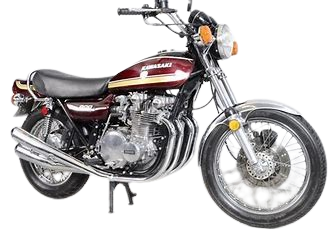
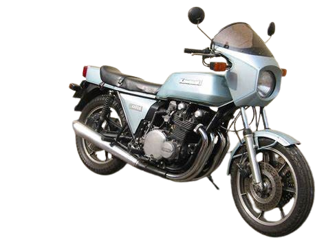
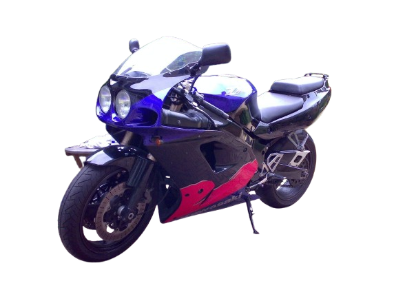

Motos à vendre - Kawasaki de luxe

Kawasaki Z900 Z1
Prix : 23 000€
Année : 1975
Description : Une moto iconique de collection, reconnue pour son design et ses performances
Voir Détails

Kawasaki Z1000 Z1R
Prix : 15 500€
Année : 2021
Description : Une version rare dans son état d'origine, proposée à 15 950 €. Ce modèle emblématique attire les collectionneurs pour son style unique et sa robustesse
Voir Détails

Kawasaki ZXR750R
Prix : 55 000€
Année : 1993
Description : Production limitée : Édition "R" basée sur la ZXR750 standard, mais optimisée pour les performances en compétition.
Voir Détails